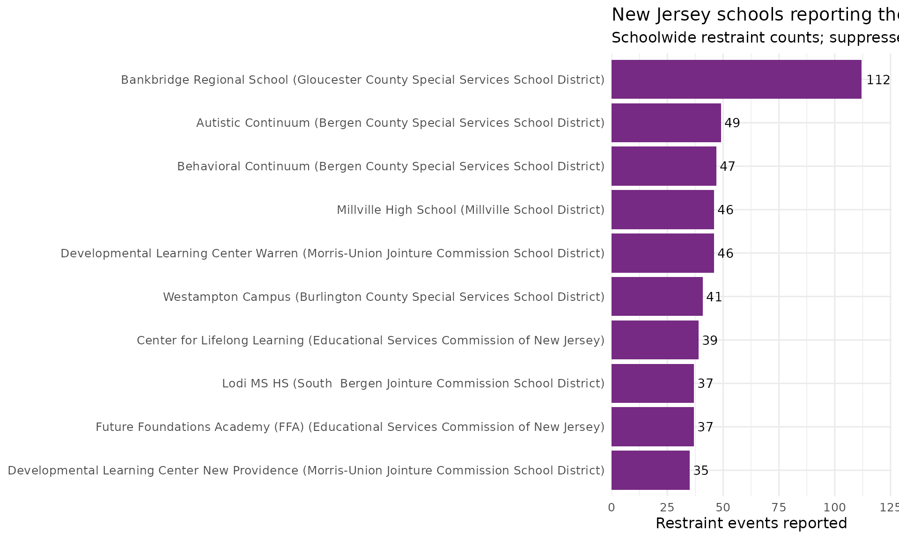
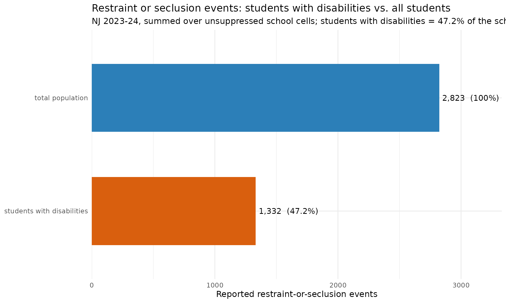

Restraint & Seclusion: A Special-Education Liability Metric
Source:vignettes/nj-restraint-seclusion.Rmd
nj-restraint-seclusion.RmdPhysical restraint and seclusion are among the most legally sensitive
events a school can record. New Jersey publishes them school-by-school
in standalone DARS (Discipline & Restraint) workbooks - separate
from the violence/vandalism/HIB data in
fetch_violence_vandalism_hib().
fetch_restraint_seclusion() reads them for end_year
2023 (SY2022-23) and 2024 (SY2023-24).
The source is school-level only (no state/district
aggregate) and is crossed by student group, so every row is one school
for one group. Small cells are masked: "*" hides a value
entirely and "<5" is a published range for 1-4 students.
Both become NA here, never a guessed number - so the
statewide sums below are floors computed over
unsuppressed cells, not exact totals.
Which schools report the most restraint events?
The schoolwide totals (subgroup == "total population",
grade_level == "TOTAL") show that reported restraint is
overwhelmingly concentrated in county special-services districts and
out-of-district placement schools that serve students with the most
intensive needs.
sw24 <- fetch_restraint_seclusion(2024) %>%
filter(subgroup == "total population", grade_level == "TOTAL",
!is.na(restraint_count))
stopifnot(nrow(sw24) > 0)
top10 <- sw24 %>%
arrange(desc(restraint_count)) %>%
slice(1:10) %>%
mutate(label = paste0(school_name, " (", district_name, ")"))
# Print-before-plot: confirm the data feeding the chart.
top10 %>% select(district_name, school_name, restraint_count, seclusion_count)
#> # A tibble: 10 × 4
#> district_name school_name restraint_count seclusion_count
#> <chr> <chr> <dbl> <dbl>
#> 1 Gloucester County Special Servic… Bankbridge… 112 12
#> 2 Bergen County Special Services S… Autistic C… 49 5
#> 3 Bergen County Special Services S… Behavioral… 47 0
#> 4 Millville School District Millville … 46 0
#> 5 Morris-Union Jointure Commission… Developmen… 46 12
#> 6 Burlington County Special Servic… Westampton… 41 20
#> 7 Educational Services Commission … Center for… 39 16
#> 8 South Bergen Jointure Commissio… Lodi MS HS 37 0
#> 9 Educational Services Commission … Future Fou… 37 10
#> 10 Morris-Union Jointure Commission… Developmen… 35 9
ggplot(top10, aes(x = reorder(label, restraint_count), y = restraint_count)) +
geom_col(fill = "#762a83") +
geom_text(aes(label = restraint_count), hjust = -0.2, size = 3.6) +
coord_flip() +
scale_y_continuous(expand = expansion(mult = c(0, 0.12))) +
labs(
title = "New Jersey schools reporting the most restraint events, 2023-24",
subtitle = "Schoolwide restraint counts; suppressed cells (<5, *) excluded",
x = NULL,
y = "Restraint events reported"
) +
theme_minimal(base_size = 12)
Restraint is concentrated among students with disabilities
The student-group breakdown lets us compare the schoolwide restraint-and-seclusion total against the students-with-disabilities subgroup. Summing the unsuppressed school cells statewide, students with disabilities account for roughly half of all reported restraint-or-seclusion events - far above their share of enrollment (about one in six students). This is the disproportionality that makes the metric a board-level concern.
rs24 <- fetch_restraint_seclusion(2024)
group_totals <- rs24 %>%
filter(grade_level == "TOTAL",
subgroup %in% c("total population", "students with disabilities")) %>%
group_by(subgroup) %>%
summarise(
any_events = sum(any_restraint_seclusion_count, na.rm = TRUE),
.groups = "drop"
)
stopifnot(nrow(group_totals) == 2)
schoolwide_total <- group_totals$any_events[group_totals$subgroup == "total population"]
swd_total <- group_totals$any_events[group_totals$subgroup == "students with disabilities"]
share_tbl <- group_totals %>%
mutate(pct_of_schoolwide = round(100 * any_events / schoolwide_total, 1))
# Print-before-plot.
share_tbl
#> # A tibble: 2 × 3
#> subgroup any_events pct_of_schoolwide
#> <chr> <dbl> <dbl>
#> 1 students with disabilities 1332 47.2
#> 2 total population 2823 100
ggplot(share_tbl, aes(x = reorder(subgroup, any_events), y = any_events,
fill = subgroup)) +
geom_col(width = 0.6, show.legend = FALSE) +
geom_text(aes(label = paste0(format(any_events, big.mark = ","),
" (", pct_of_schoolwide, "%)")),
hjust = -0.05, size = 4) +
coord_flip() +
scale_y_continuous(expand = expansion(mult = c(0, 0.18))) +
scale_fill_manual(values = c("students with disabilities" = "#d95f0e",
"total population" = "#2c7fb8")) +
labs(
title = "Restraint or seclusion events: students with disabilities vs. all students",
subtitle = paste0("NJ 2023-24, summed over unsuppressed school cells; ",
"students with disabilities = ",
share_tbl$pct_of_schoolwide[
share_tbl$subgroup == "students with disabilities"],
"% of the schoolwide total"),
x = NULL,
y = "Reported restraint-or-seclusion events"
) +
theme_minimal(base_size = 12)
Notes
-
School-level only. The DARS workbook has no
district/state/county aggregate;
levelmust be"school". Statewide figures here are sums of the per-school cells. -
Suppression ->
NA."*"and"<5"both becomeNA;"<5"is never read as5. Statewide sums are therefore floors over unsuppressed cells - the true totals are higher, but the masked counts are 1-4 students each. -
Student group. The raw
Student Grouplabel is kept asstudent_groupand split into normalizedsubgroup+grade_level. The schoolwide total is labelled"Schoolwide"in 2022-23 and"School Total"in 2023-24; both map tosubgroup == "total population".
sessionInfo()
#> R version 4.6.1 (2026-06-24)
#> Platform: x86_64-pc-linux-gnu
#> Running under: Ubuntu 24.04.4 LTS
#>
#> Matrix products: default
#> BLAS: /usr/lib/x86_64-linux-gnu/openblas-pthread/libblas.so.3
#> LAPACK: /usr/lib/x86_64-linux-gnu/openblas-pthread/libopenblasp-r0.3.26.so; LAPACK version 3.12.0
#>
#> locale:
#> [1] LC_CTYPE=C.UTF-8 LC_NUMERIC=C LC_TIME=C.UTF-8
#> [4] LC_COLLATE=C.UTF-8 LC_MONETARY=C.UTF-8 LC_MESSAGES=C.UTF-8
#> [7] LC_PAPER=C.UTF-8 LC_NAME=C LC_ADDRESS=C
#> [10] LC_TELEPHONE=C LC_MEASUREMENT=C.UTF-8 LC_IDENTIFICATION=C
#>
#> time zone: UTC
#> tzcode source: system (glibc)
#>
#> attached base packages:
#> [1] stats graphics grDevices utils datasets methods base
#>
#> other attached packages:
#> [1] ggplot2_4.0.3 dplyr_1.2.1 njschooldata_0.9.25
#>
#> loaded via a namespace (and not attached):
#> [1] utf8_1.2.6 sass_0.4.10 generics_0.1.4 tidyr_1.3.2
#> [5] stringi_1.8.7 hms_1.1.4 digest_0.6.39 magrittr_2.0.5
#> [9] evaluate_1.0.5 grid_4.6.1 timechange_0.4.0 RColorBrewer_1.1-3
#> [13] fastmap_1.2.0 cellranger_1.1.0 jsonlite_2.0.0 purrr_1.2.2
#> [17] scales_1.4.0 textshaping_1.0.5 jquerylib_0.1.4 cli_3.6.6
#> [21] rlang_1.2.0 withr_3.0.3 cachem_1.1.0 yaml_2.3.12
#> [25] otel_0.2.0 downloader_0.4.1 tools_4.6.1 tzdb_0.5.0
#> [29] vctrs_0.7.3 R6_2.6.1 lifecycle_1.0.5 lubridate_1.9.5
#> [33] snakecase_0.11.1 stringr_1.6.0 fs_2.1.0 ragg_1.5.2
#> [37] janitor_2.2.1 pkgconfig_2.0.3 desc_1.4.3 pkgdown_2.2.0
#> [41] pillar_1.11.1 bslib_0.11.0 gtable_0.3.6 glue_1.8.1
#> [45] systemfonts_1.3.2 xfun_0.59 tibble_3.3.1 tidyselect_1.2.1
#> [49] knitr_1.51 farver_2.1.2 htmltools_0.5.9 labeling_0.4.3
#> [53] rmarkdown_2.31 readr_2.2.0 compiler_4.6.1 S7_0.2.2
#> [57] readxl_1.5.0